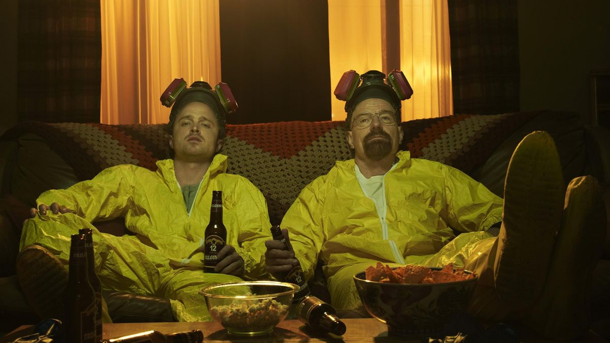
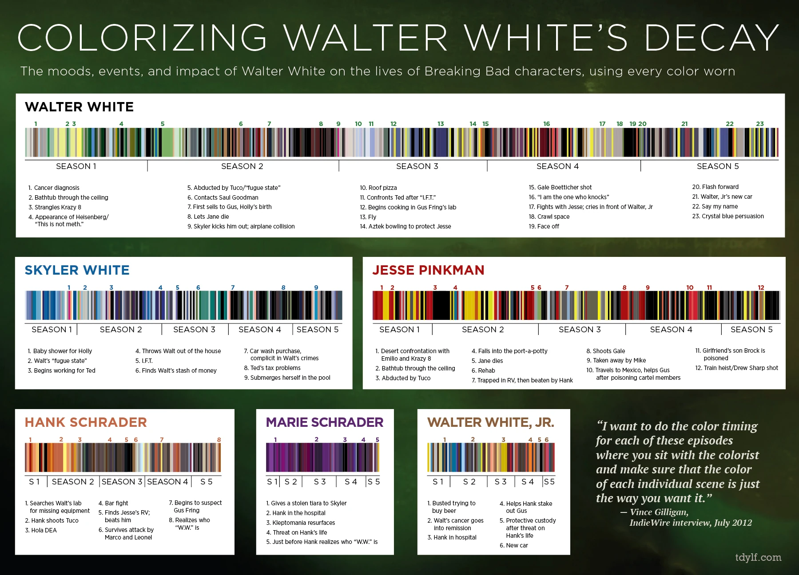

A série Breaking Bad é aclamada pelo mundo inteiro e pela crítica especializada, durante suas cinco temporadas, a série ganhou 230 indicações e um total de 118 prêmios em diferentes categorias.A produção, criada por Vince Gilligan, é elogiada especialmente por sua narrativa densa, construção de personagens complexos e riqueza visual. Breaking Bad conta a história de Walter White, um professor de química do ensino médio que, após ser diagnosticado com câncer de pulmão, decide produzir metanfetamina para garantir o sustento de sua família. Ele vive com a esposa grávida, Skyler, e o filho adolescente, Walter Jr., que possui paralisia cerebral. Inicialmente movido pelo desespero financeiro, Walter acaba se envolvendo cada vez mais com o mundo do crime e passa a se identificar com sua nova identidade: Heisenberg. A trama se destaca por sua evolução moral — Walter White, que começa como uma figura quase trágica, gradualmente se torna um anti-herói perigoso. Além disso, personagens como Jesse Pinkman, seu ex-aluno e parceiro no crime, contribuem para a complexidade emocional da série, trazendo temas como culpa, redenção e lealdade. Com direção precisa, diálogos impactantes e uma trilha sonora cuidadosamente escolhida, Breaking Bad se tornou um marco na história da televisão, sendo considerada por muitos críticos como uma das melhores séries de todos os tempos.
A série premiada é bem elogiada pela riqueza em seu roteiro, e uma teoria que foi confirmada depois pelo próprio diretor foi da psicologia das cores. Ao assistir a série, o telespectador percebe que cada detalhe é muito bem pensado e aplicado. Até as cores no cenário estão interligados com a psicologia das cores, as cores dos figurinos dos personagens refletem suas transformações emocionais e morais ao longo da história, funcionando como uma ferramenta sutil de storytelling. Existe um infogáfico que mostra todas as cores que os personagens usam ao decorrer da série. Dê uma olhada abaixo:
